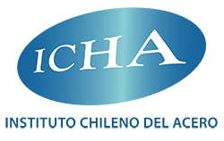
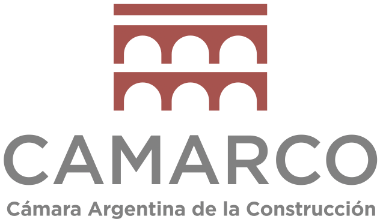
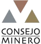
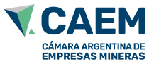
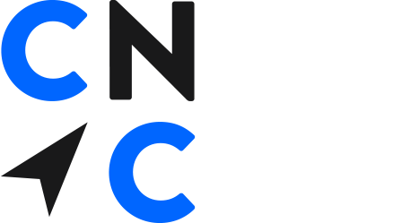

Minería y Minerales
Estructuras de acero estructural, estructuras industriales e infraestructura minera.
Sectores que Atendemos
Estructuras de acero estructural, estructuras industriales e infraestructura minera.
Recipientes a presión, fabricación de procesos y estructuras industriales, sujeto a las capacidades y certificaciones del socio fabricante seleccionado.
Puentes, acero estructural y componentes de construcción.
Fabricación de acero, edificios industriales y estructuras modulares.
Paquetes seleccionados de fabricación industrial e infraestructura.
La Diferencia TPA
Conectando a la Industria a Través de Redes Internacionales Consolidadas
Trans-Pacific Alliance se beneficia de una amplia experiencia en relaciones comerciales internacionales, vinculación institucional y desarrollo comercial transfronterizo.
Nuestro liderazgo comercial latinoamericano aporta más de 20 años de experiencia trabajando con cámaras de comercio, iniciativas de comercio internacional, delegaciones empresariales y redes institucionales.
Combinado con la experiencia de nuestro liderazgo técnico en grandes proyectos industriales internacionales, esto proporciona a TPA una valiosa comprensión de los requisitos tanto comerciales como técnicos de la cooperación industrial transfronteriza.
Estas capacidades respaldan nuestra relación con empresas mineras, contratistas EPC, desarrolladores de proyectos y fabricantes asiáticos calificados.
Hablamos el lenguaje de ingeniería del cliente. Nuestras credenciales senior en soldadura, recubrimientos, tuberías e inspección de recipientes a presión nos permiten desbloquear puntos de inspección y resolver consultas técnicas al instante.
Visibilidad total sobre el origen de materias primas, Mill Test Reports (MTR), Weld Procedure Qualification Records (PQR/WPS), Welder Performance Qualifications (WPQ), procedimientos NDT y supervisión de taller.

Instituto Chileno del Acero
Cámara Argentina de la Construcción
Consejo Minero de Chile
Cámara Argentina de Empresas Mineras
Cámaras de Comercio · Chile y Argentina